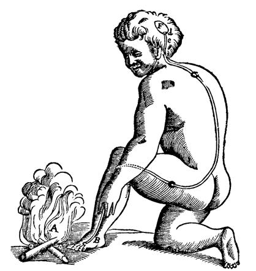

8. gaia · Descartes
«Liburu on guztiak irakurtzea iragandako mendeetako pertsonarik prestuenekin solasean aritzea bezala da, haiek izan baitziren liburuon egileak». — René Descartes, Metodoari buruzko diskurtsoa (1637)
Descartesengan sartzeko
René Descartesekin (1596-1650) filosofia modernoa hasten dela esan ohi da. Formula zuzena da, baina komeni da ulertzea zergatik. Kontua ez da Descartesek inork ikusi gabeko egia berri bat aurkitu zuela, zerbait erradikalagoa baizik: hutsetik hastea erabaki zuen. Hogei mendetako jakintza jasoaren aurrean, galdetu zion bere buruari ea ba ote zen ezer, gauza bakar bat besterik ez bazen ere, erabat ziurtzat jo zezakeenik, eta ezagutza guztia zimendu bakar horren gainean berreraikitzea proposatu zion bere buruari, halakorik aurkitzen bazuen. Jakintza bere oinarrietatik birfundatzeko borondate horrek, norberaren arrazoiaz soilik fidatuz, egiten du lehen filosofo modernoa.
Bizitza eta zirkunstantzia. Descartes La Flèchen hezi zen, bere garaiko Frantziako ikastetxerik onenetako batean, josulagunek zuzendua. Prestakuntza bikoitza jaso zuen han: Erdi Arotik jasotako eskolastika eta, aldi berean, garaiko matematikarik aurreratuenak. Eta nahasita atera zen. Egiaztatua zuen ia edozein auzi filosofikori buruz gizon guztiz buruargiek gauza bat defendatzen zutela argudio onekin, eta beste batzuek, haiek bezain jakintsuek, kontrakoari eusten ziotela argudio ez gutxiago sendoekin. Matematiketan bakarrik aurkitu zuen ziurtasunik eta adostasunik. Alde hori —aurrera egin gabe eztabaidatzen duen filosofia baten eta frogatzen eta konbentzitzen duen matematika baten artekoa— izango da haren obra osoaren hazia.
Pentsalari bat, gerran den garai batean. Descartesek soldadu gisa bizi izan zituen Hogeita Hamar Urteko Gerraren lehen urteak, Erreformaren ondoren (§32) Europa odoldu zuen katolikoen eta protestanteen arteko gatazka handiarenak. Bizitza militarra utzi zuenean, Herbehereetan jarri zen bizitzen, mende hartan aterpe baitziren askatasunez pentsatu nahi zuenarentzat. Han idatzi zuen bere obra ia guztia. Katoliko sutsua zen eta, zuhur, Galileok (1564-1642) heliozentrismoa defendatzeagatik jasan berri zuen kondena zela-eta (§33), beti zaindu zuen Elizarekin aurrez aurre talka ez egitea. Haren liburu handia, Metodoari buruzko diskurtsoa, 1637an agertu zen, iraultza zientifikoa bete-betean zela: Descartesek pentsamenduarentzat bilatzen du zientzia berria naturaren azterketari ematen ari zitzaion bezain metodo segurua.
Gaiaren mapa. Haren filosofia berak eraikitzen duen ordena berean zeharkatuko dugu. Lehenik, arrazionalismo osoaren programa komuna, Descartesek inauguratzen duen korrontearena (§34). Gero, ziurtasuna erdiesteko proposatzen duen metodoa (§35). Ondoren, metodo hori abian jartzea: dena suntsitzen duen zalantza eta eusten dion lehen egia, cogitoa (§36). Eta, azkenik, lehen egia horren gainean berreraikitzea lortzen duena: Jainkoaren eta munduaren existentzia eta errealitatea substantziatan banatzea, arimaren eta gorputzaren dualismo ospetsuarekin (§37). Has gaitezen Descartes bere korrontean kokatzen.

§34 · Arrazionalismoaren ezaugarri orokorrak
Aurreko atal osoa galdera batean amaitzen zen: egiaren irizpidea jada ez bada jasotako autoritatea, subjektua bera baizik, orduan «nola ezagutzen dugu?» (§30, §33). Filosofia modernoa bitan banatzen da galdera horri erantzutean. Korronte batek dio benetako ezagutzaren iturria eta bermea arrazoian dagoela; besteak, esperientzian dagoela. Lehenengoari arrazionalismoa deitzen diogu; bigarrenari, enpirismoa. Atal honek programa arrazionalista azaltzen du, Descartes baita haren sortzailea; enpirismoa §38n ikusiko dugu, modu konparagarrian idatzia, biak aurrez aurre jar ditzazun.
Arrazoia, ezagutzaren iturri. Arrazionalismoa mesfidantza batetik abiatzen da: zentzumenek engainatu egiten dute, eta, asko jota, partikularra eta aldakorra ematen digute. Benetako ezagutza —unibertsala, beharrezkoa, segurua— ezin da haietan bermatu, arrazoian baizik. Teorema matematiko batek beti eta leku guztietan balio duen bitartean, zentzumenek erakusten didatenak hemen, orain eta, beharbada, itxuraz baino ez du balio. Horregatik bilatzen du arrazionalistak arrazoian, eta ez esperientzian, jakitearen jatorria.
Jatorrizko ideiak. Ezagutza zentzumenetatik ez badator, nondik ateratzen ditu arrazoiak bere edukiak? Bere baitatik. Arrazionalistek diote adimenak jatorrizko ideiak dituela: zentzumenez jaso ez ditugun eta irudimenaz fabrikatu ez ditugun ideiak, arrazoiak bere naturaz berez dituenak. Infinituaren ideia da adibide tipikoa: inork ez du inoiz infinitua ikusi; beraz, ideia hori ezin da ikusmenetik etorri, ezta ukimenetik ere. Halakoak dira, halaber, geometriako axiomak, edo kausa orok ondorio bat sortzen duelako printzipioa. Jatorrizko ideien tesia izango da, hain zuzen, enpirismoaren lehen jomuga (§38), errotik ukatuko baitu.
Eredu matematikoa. Arrazionalista ez da arrazoiaz fidatzen soilik: hura erabiltzeko modu jakin batez fidatzen da, matematikenaz. Geometria printzipio ebidente gutxi batzuetatik abiatzen da —axiomak— eta, dedukzio hutsez, gero eta egia konplexuagoak ateratzen ditu haietatik, denak abiapuntua bezain seguruak. Horixe da ezagutza arrazionalistaren ideala: printzipio ebidenteetatik abiatu eta dedukzioz aurrera egin, ziurtasunak kateatuz. Horregatik du helburu arrazionalismoak frogapenezko jakite bat, eta ez behaketen metaketa hutsa.
Arrazoiaren autonomia. Bada honetan guztian keinu tipikoki moderno bat, garaiaren hari komun gisa ikusi genuena (§30): arrazoiak bere burua autonomo deklaratzen du. Jada ez du fedearen zerbitzura lan egiten, eta ez du kanpoko autoritate baten abalik behar bere ondorioak baliozkotzeko. Komeni da hau gaizki ez ulertzea: arrazionalista handiak fededunak izan ziren —Descartes bera, urrutirago joan gabe—, baina haien Jainkoa eta hartaz arrazoitzeko modua lehenik bere arrazoiaz fidatzen den pentsalari batenak dira jada. Arrazoia aski da bere kabuz ezagutzeko.
Irismena: mundu adigarri bat. Noraino iristen da ezagutza hau? Oso urrun, arrazionalistak jotzen baitu errealitatea bera arrazionalki ordenatuta dagoela. Munduak arrazoiak berreraiki dezakeen ordena bati obeditzen badio, orduan benetako ezagutza objektiboa da: ez dago nire kulturaren, nire biografiaren edo nire aldartearen mende; gauzak nolakoak diren atzematen du. Konfiantza hori —giza arrazoiak, bere kabuz, errealaren egitura ezagut dezakeela— da mende bat geroago Humeren enpirismoak (§39) eta, batez ere, Kanten filosofia kritikoak (§50) serioski zalantzan jarriko dutena.
Izenak. Korronte arrazionalistan, Descartesez gain —zentzu hertsian lehena—, Baruch Spinoza (1632-1677) eta Gottfried Leibniz (1646-1716) sartzen dira, denak Europa kontinentaleko pentsalariak. Haien aurrez aurre, uharte britainiarretan, korronte enpirista altxatzen da, David Humerengan gailurra jotzen duena; hari eskainiko diogu hurrengo gaia. Descartes da deskribatu berri dugun programaren adibiderik onena; ikus dezagun lanean, haren metodotik hasita.
§35 · Descartes: metodoa
Gogora dezagun Descartes gaztearen nahasmendua: filosofiak aurrera egin gabe eztabaidatzen du; matematikek, berriz, frogatu eta konbentzitu egiten dute. Kontraste horretatik ateratzen du bere diagnostikoa: filosofiari falta zaiona ez dira ideiak, metodoa baizik. Bide segururik gabe, arrazoia galdu egiten da, dohain handikoa izanagatik ere, norabiderik gabeko ibiltari on bat bezala. Eta, baldin bada bide hori baduen diziplinaren bat, huraxe izango da imitatu beharrekoa.
Matematikak eredu. Zergatik matematikak, eta ez beste zientziaren bat? Haietan aurkitzen duelako Descartesek beste inon aurkitu ez zuena: guztiek onartzen dituzten printzipio batzuk —axiomak— eta edozein baieztapen onartzeko edo baztertzeko irizpide argi bat. Matematiketan ez dago lekurik filosofian hainbeste frustratu zuten kontrako iritzientzat. Beraz, matematiken jarduteko modua ezagutza osora eramatea proposatzen du Descartesek: ebidentea denetik abiatu eta pausoz pauso aurrera egin, ezer zalantzazkorik onartu gabe. Formulatuko duen metodoa ideal horren orokortzea besterik ez da.
Lau arauak. Descartesek irakurtzea komeni den testuan utzi zuen jasota bere metodoa, Metodoari buruzko diskurtsoan (1637), eta lau araura laburbiltzen du bertan. Lehena, eta garrantzitsuena, ebidentziaren araua da: «ezer ez onartzea egiazkotzat, hala dela ebidentziaz jakin gabe»; hau da, ez onartzea adimenari «hain argi eta bereizi» agertzen zaiona baizik, non ez baitago hura zalantzan jartzeko biderik. Beste hirurek lana ordenatzen dute: analisiak, «zailtasun bakoitza ahal bezainbat zatitan banatzea», konplexua bere elementu bakunetan deskonposatuz; sintesiak, «pentsamenduak ordenan gidatzea, objekturik bakunenetatik hasita», konplexua mailaz maila berreraikitzeko; eta zenbaketak, «hain kontaketa oso eta berrikuspen orokorrak egitea», non bat ziur geratzen baita ez duela ezer alde batera utzi.
Argi eta bereizi. Guztiaren erdigunea lehen araua da, hartan baitoa arrazionalismoaren egia-irizpidea: egiazkoa da adimenak modu ebidentean —hau da, argi eta bereizi— atzematen duena. Eta komeni da bi termino horiek zehaztea, Descartesek zorroztasunez erabiltzen baititu. Ideia bat argia da adi dagoen adimenari present eta ageri zaionean, erabat definitu eta ulertu ahal izateraino. Eta bereizia da besteengandik hain aparte dagoenean, non ez baitu bere baitan biltzen bera ez den ezer, halako moldez non ez baitugu beste ezein ideiarekin nahasten. Triangeluaren ideia matematikoa argia eta bereizia da; «ondo dagoenaren» ideia lausoa, ez. Argi eta bereizi denak bakarrik pasatzen du iragazkia.
Pentsatzeko metodo bat, ez esperimentatzeko. Errepara iezaiozu §33n ikusi genuen zientzia berriaren metodoarekiko alde erabakigarri bati. Baconen metodo esperimentala naturaren behaketatik abiatzen da; Descartesena, aldiz, arrazoiaren bide bat da, bere ideien gainean diharduena: analizatu, ordenatu eta deduzitu egiten du, frogapen matematiko batean bezala. Arrazionalista baten metodoa da. Baina metodo batek, ona izanagatik ere, abiapuntu bat behar du: lehen printzipio erabat ziur bat, handik gainerakoa deduzitzeko, geometrian axiomak bezala. Ba al da halako egiarik, edozein zalantzari eusten dionik? Jakiteko, Descartesek arma suntsitzaile bihurtuko du bere lehen araua. Horretaz dihardu hurrengo atalak.
§36 · Descartes: zalantza metodikoa, cogitoa eta ideia motak
Metodoaren lehen arauak agintzen zuen ez onartzeko ebidentea ez zen ezer. Descartesek hitzez hitz hartzen du, eta muturreraino eramaten: zalantzazkoarekin estropezu egin zain egon beharrean, sistemaz denaz zalantza egitea erabakitzen du, ea zerbaitek bizirik irauten duen. Horixe da zalantza metodikoa. Garrantzitsua da haren zentzua ondo ulertzea, eszeptizismoaren antza baitu, izan gabe. Eszeptikoak zalantzan geratzeko egiten du zalantza, egia posiblerik ez dagoela uste duelako (§05, §23). Descartesek justu kontrakoagatik egiten du zalantza: ziurtasun bat aurkitzeko, eta zalantza haren tresna baino ez da, ez haren helburua. Behin-behineko zalantza da, borondatezkoa eta zuzendua.
Lehen arrazoia: zentzumenek engainatu egiten dute. Zertaz egin dezakegu zalantza? Lehenik eta behin, zentzumenen bidez heltzen zaigun guztiaz. Badakigu inoiz engainatu gaituztela —arraun zuzen batek hautsia dirudi uretan, dorre karratu bat biribil ikusten da urrutitik—, eta, erabakigarriena dena, ez dugu irizpide segururik jakiteko noiz engainatzen gaituzten eta noiz ez. Eta ezagutza-iturri batek behin bederen gezurra esan badit, nik ohartzerik izan gabe, zuhurtziak hartaz erabat mesfidatzera behartzen nau.
Bigarren arrazoia: ametsa. Norbaitek esan lezake badirela engainatzen ez duten gauzak: hemen eserita nagoela, irakurtzen, gorputz batekin. Baina Descartesek beste pauso bat ematen du ametsaren argudioarekin: askotan, lotan nengoela, erabateko konbentzimenduz sinetsi izan dut errealak ez ziren gauzak bizitzen ari nintzela, eta esnatzean ez zegoen modurik hori ametsaren barrutik jakin izateko. Nola egon ziur, orduan, oraintxe bertan amesten ari ez naizela? Ezin badut hori baztertu, kanpoko munduaren eta neure gorputzaren existentzia ere zalantzapean erortzen dira.
Hirugarren arrazoia: jeinu gaiztoa. Geratzen dira, gutxienez, arrazoiaren egiak: bi eta hiru bost dira, amets egin nahiz esna egon. Hemen Descartesek bere gradurik gorenera eramaten du zalantza, hiperboliko egiten du —nahita puztua—, muturreko hipotesi batekin: imajina dezagun badela jeinu gaizto bat, ni engainatzen tematutako izaki ahalguztidun bat, batuketak egitean edo karratu baten aldeak zenbatzean ere erraraztea eragiteko gai dena. Hipotesi hori baztertu ezin dudan bitartean, matematikak berak ere ez dira salbatzen. Hirugarren kolpe honen ondoren ez da ezer zutik geratzen: zalantzak dena arrasatu du.
Lehen ziurtasuna: cogitoa. Eta, hala ere, ezerez horren hondo-hondoan harkaitz bat aurkitzen du Descartesek. Jeinu gaiztoak nahi adina engainatuta ere, bada faltsua izan ezin den zerbait: ni, zalantza egiten dudan bitartean, pentsatzen ari naizela; eta, pentsatzen badut, existitu egin behar dut, engainatua izateko baino ez bada ere. Hauxe da lehen egia, zalantza orori eusten diona: «Pentsatzen dut, beraz, banaiz» —latinez, cogito, ergo sum—. Ez da dedukzio bat, berehalako intuizio bat baizik: pentsatze-egintzan bertan, huts egiterik gabe atzematen dut existitzen naizela. Eta erabateko argitasunez eta bereizitasunez ezartzen zaidan lehen gauza denez, lehen arauaren irizpidea berresteko ere balio du: Descartesek dioen bezala, «oso argi eta bereizi atzematen ditugun gauzak egiazkoak dira denak».
Zer naizen: pentsatzen duen gauza bat. Eta zer da existentzia zalantzarik gabea duen «ni» hori? Ez nire gorputza —hartaz oraindik zalantza egiten dut, amesten ari bainaiteke—, baizik eta soilik neure buruaz kontraesanean erori gabe ukatu ezin dudan hura: pentsatzen duen zerbait naizela. Descartesek, latinez, res cogitans deitzen dio, «gauza pentsatzailea». Oraingoz ezin du besterik baieztatu: ez gorputzik dudanik, ez mundurik dagoenik. Bere baitan itxita dago, subjektu pentsatzaile gisa duen existentzia hutsean —solipsismoa deritzo horri—. Ziurtasun absolutu bat irabazi du, baina bakarra, eta minimoa.
Ideia motak. Segurua den gauza bakarra pentsatzen duen gauza bat naizela bada, hurrengo galdera hau da: eta zertan pentsatzen du gauza horrek? Ideietan; eta Descartesek hiru motatan sailkatzen ditu, jatorriaren arabera. Adbentiziak kanpotik, esperientziatik, datozkigula dirudite: «zaldiaren» edo «zuhaitzaren» ideia. Faktiziak norberak fabrikatzen ditu, beste batzuk konbinatuz: «adarbakarraren» ideia, «zaldia» eta «adarra» elkartuz egina. Eta jatorrizkoak ez datoz zentzumenetatik, ezta irudimenetik ere: arrazoiak berez ditu: «infinituaren» edo «perfekzioaren» ideiak, ezein zentzumenek eman ezin izan dizkigunak.
Irteerarako zubia. Sailkapen hau ez da alferrikako inbentario bat: solipsismotik irteteko bidea da. Ideia adbentiziez ezin da oraindik fidatu Descartes, kanpoko munduaz zalantza egiten baitu artean; are gutxiago faktiziez, haien mendekoak baitira. Jatorrizkoak baino ez zaizkio geratzen. Eta haien artean bada erabakigarri bat —infinituaren ideia, Jainkoaren ideia esatea bezalatsu dena—, itxialditik ihes egiteko eta galdutako ziurtasunak banan-banan berreskuratzeko giltza izango dena. Jatorrizko ideia horrek Jainkoaren existentzia frogatzea nola ahalbidetzen duen eta, harekin, arrazoiarenganako eta munduarenganako konfiantza nola itzultzen duen: horixe ikusiko dugu hurrengo atalean.
§37 · Descartes: substantziak eta dualismoa
Descartes bere «ni» pentsatzailean itxita utzi genuen, ziurtasun bakar batekin eta giltza bat eskuan: infinituaren —edo Jainkoaren— jatorrizko ideia. Haren filosofiaren alde eraikitzailea giltza hori erabiltzean datza. Ordena zorrotza da, frogapen batean bezala: lehenik Jainkoa existitzen dela frogatu behar da; gero bakarrik berreskuratu ahal izango da gainerako guztia.
Jainkoaren existentziaren frogak. Descartesek bere baitan aurkitzen duen Jainkoaren ideiatik abiatuta arrazoitzen du. Haren argudio nagusia infinitutasunarena da: nik izaki infinitu eta perfektu baten ideia dut, baina ni finitua eta inperfektua naiz —horren froga da zalantza egiten dudala, eta zalantza egitea inperfekzio-seinale da—; baina gehiago dena ezin da gutxiago denetik atera; beraz, infinituaren ideia hori ezin izan dut nik neuk sortu, ezta inguratzen nauen mundu finitutik jaso ere: benetan infinitua den izaki batek bakarrik, Jainkoak, jarri ahal izan du nigan1. Infinituaren ideia, adimen finitu batean inprimatua, egileak bere obran jarritako sinadura bezalakoa da.
Jainko egiatia: zalantza altxatzen duen bermea. Hemen dago obra osoaren bira erabakigarria. Jainkoa existitzen bada eta perfektua bada, orduan ezin da engainatzaile bat izan, engainatzea inperfekzio bat baita. Eta engainatzen ez duen Jainko batek ez zukeen nigan jarriko errotik faltsutzailea den arrazoi bat: beraz, hartaz fida naiteke, eta argi eta bereizi hautematen dudana egiazkoa da. Honekin desagertu egiten da jeinu gaiztoaren hipotesia —Jainkoak, egiatiak, hark mehatxatzen zuen lekua hartzen du— eta zalantzak hiperbolikoa izateari uzten dio. Ezagutzaren bermea, cogitoak beretzat bakarrik ziurtatzen zuena, arrazoiak ebidentziaz atzematen duen guztira hedatzen da orain. Errepara iezaiozu honek esan nahi duenari: sistema kartesiarrean, Jainkoa da, azken buruan, giza arrazoiaren egia bermatzen duena.
Nondik dator, orduan, errorea? Jainkoak arrazoia bermatzen badu, arazo bat sortzen da: nolatan erratzen gara? Descartesen erantzuna dotorea da. Adimena, ideiak atzematen dituena, mugatua da, baina ez gaitu engainatzen; errorea borondatetik jaiotzen da: askea eta mugagabea denez, adimenak argiro atzematen duenetik harago baieztatzera edo ukatzera oldartzen da. Erratu, beraz, erabat ulertzen ez dugunaz epaitzen dugunean erratzen gara. Horra ezagutza arrazionalistaren muga: egia ziurtatua dago, baldin eta argi eta bereizi denari lotzen bagatzaizkio eta, gainerakoan, epaia eteten badugu.
Hiru substantziak. Arrazoiarenganako konfiantza berreskuratuta, Descartesek errealitatea ordenatu dezake jada. Substantziaren nozioarekin egiten du: bere kabuz existitzen dena, izateko beste ezeren beharrik ez duena. Hiru bereizten ditu. Res cogitans, gauza pentsatzailea —nia, arima—, zeinaren esentzia pentsatzea baita. Res infinita —Jainkoa—, infinitua eta perfektua. Eta res extensa —mundu materiala—, zeinaren esentzia hedadura baita, espazioa betetzea. Descartesek ordena honetan aurkitu ditu —nia, Jainkoa, mundua—, baina izatearen ordena alderantzizkoa da: lehenik Jainkoa, hark sortzen baititu beste biak. Zorrotz hitz eginda, Jainkoa bakarrik da substantzia zentzu betean, hura bakarrik ez baitago ezeren mende; baina Descartesek substantzia deitzen jarraitzen die arimari eta munduari ere, elkarrekiko independenteak direlako: nia mundurik gabe existi daiteke, eta mundua nirik gabe.
Mundua, mekanismo bat bezala. Mundu materialaren berezkoa hedadura hutsa bada, orduan hartan dena murrizten da mugimenduan dauden pieza hedatuetara. Hortik dator Descartesen irudi mekanizista: unibertsoa erloju erraldoi bat bezalakoa da, elkar bultzatzen duten engranajeen joko bat, lege finkoen arabera, arimarik eta ezkutuko xederik gabe. Ikuspegi hau ezin hobeto ahokatzen da iraultza zientifikoaren fisikarekin (§33), eta izugarri emankorra izango da zientziarentzat; baina, azkeneraino eramanda, arazo bat planteatzen du gizakiarengana iristean.
Dualismoa eta guruin pineala. Zeren gizakia, aldi berean, sortutako bi substantziak baita: res cogitans eta res extensa, pentsatzen duen arima eta espazioa betetzen duen gorputza. Horixe da dualismo antropologiko kartesiarra. Eta zailtasun bat gordetzen du bere baitan, Descartesek berak ikusi eta konpontzea lortu ez zuena: arima eta gorputza kontrako naturako substantziak badira —bata inmateriala, bestea hedatua—, nolatan eragiten diote elkarri?, nola mugitzen du nire borondateak beso bat, edo nola iristen da gorputzeko min bat arimaraino? Descartesek proposatu zuen kontaktu-puntua garuneko organo txiki bat zela, guruin pineala. Konponbideak ez zuen ia inor konbentzitu, eta mentalaren eta fisikoaren arteko erlazioaren arazoa haren filosofiaren herentziarik arantzatsuenetako —eta biziienetako— bat izan da harrezkero.

Enpirismorantz eta Kantenganantz. Descartesekin, arrazionalismoak eraikin oso bat altxatu du —arrazoia, metodoa, nia, Jainkoa, mundua— cogitoaren zimenduaren gainean. Baina eraikin hori laster erasoak jasoko dituzten bi piezatan bermatzen da: jatorrizko ideietan eta substantziaren nozioan. Enpirismoak (§38) ukatu egingo du jatorrizko ideiarik dugunik, eta, Humerekin (§39), substantziak ezagutzerik ere badugunik; eta Kant (§50) arrazoiaren eta esperientziaren arteko norgehiagoka gainditzen saiatuko da. Horregatik, ezagutzaren jatorriari buruzko testu kartesiarra paraleloan irakurtzea komeni den serie bateko lehena da —Descartes, Hume, Kant—, galdera berari emandako hiru erantzun lehiakide: noraino ezagut dezake arrazoiak?
Descartesek bigarren bide bat eransten du, Canterburyko Anselmok XI. mendean formulatu zuen argumentu ontologikoaren bertsio bat: izaki erabat perfektu baten ideian jasota dago jada existentzia, existituko ez litzatekeen izaki bat existitzen dena baino inperfektuagoa litzatekeelako; beraz, Jainkoa, definizioz, existitu egiten da. Argudio oso eztabaidatua da —bere garaian jada—, eta komeni da infinitutasunaren argumentuaren osagarri gisa hartzea, hark eusten baitio benetan eraikinari.↩︎